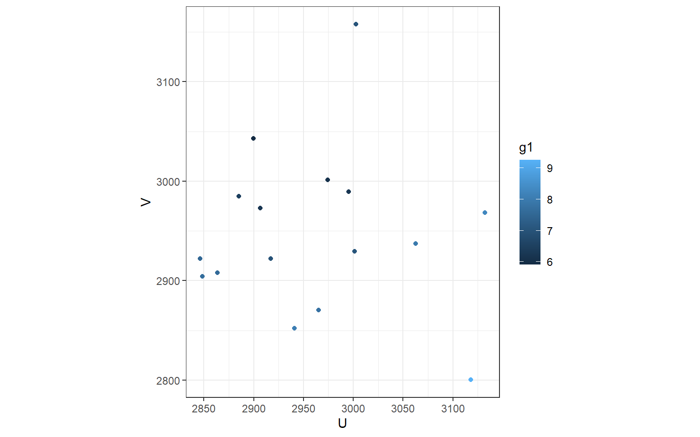

HGWR Model and How to Use It
A brief tutorial to Hierarchical and Geographically Weighted Regression model and hgwrr package in R.
Introduction to HGWR Model
What is HGWR model?
Hierarchical and Geographically Weighted Regression, shorted for HGWR, is a spatial modelling method designed for data of spatial hierarchical structures. Just as its name implies, this is a combination of Hierarchical Linear Model (HLM, also known as Multilevel Model, Raudenbush 1993) and Geographically Weighted Regression (GWR, Brunsdon, Fotheringham, and Charlton 1996). In this model, spatial effects are divided into three types: global fixed, local fixed and random. Formally, it is expressed as \[ y = G\gamma + X\beta + Z\mu + \epsilon \] with \(y\) the dependent variable, \(G\) the group level independent variables, \(\gamma\) the local fixed effects, \(X\) also the group level independent variables, \(\beta\) the global fixed effects, \(Z\) the individual level independent variables, \(\mu\) the random effects, \(\epsilon\) the individual errors.
Why HLGWR model?
As we know, hierarchical structure is commonly existing in spatial data. For example, cities can be grouped by provinces or other higher-level administrative district they belong to; house prices may share some factors from the block; and students in one school have different access to education resources with those in another school. When dealing with this type of data, we usually choose HLM to address the within-group homogeneity and the between-group heterogeneity. And there are usually two types of variables: group-level variables and sample-level variables. The formal ones are used to describe the properties of groups (such as the provinces, blocks and schools); the latter ones are observations of individual samples (such as the cities, houses and students). The effect of some sample-level variables are similar in all groups, thus they are modelled with fixed coefficients (effects). For others, they are modelled individually, i.e., with random effects.
However, for group-level variables, they can only be modelled with fixed effects. For spatial data, we would encounter some problems. According to the Tobler’s first law of Geography “Everything is related to everything else, but near things are more related than distant things” (Tobler 1970). If the model is calibrated with equally weighted samples, spatial heterogeneity would be overlooked (Fotheringham, Brunsdon, and Charlton 2002). Thus, it requires us to distinguish “local fixed effects” from “global fixed effects” to discover spatial heterogeneity in group-level variables.
But why not GWR or Multiscale GWR (Fotheringham, Yang, and Kang 2017, LuBrunsdon–2017) Because when dealing with data of hierarchical structures, GWR is problematic (Hu et al. 2022). We know that GWR calibrate a model with unique coefficients on each sample by borrowing data from its neighbours. And it uses a parameter “bandwidth” to control how many neighbours are included. If samples are not hierarchically structured, everything works well. However, just imagine a situation like Figure 1. For the two samples of red color and blue color, we take the same number of their neighbours, but actually the spatial extents are not the same. In extreme cases, spatial extends of some samples could be too small to hold more than one or two location, but some are large enough. This would lead to the failure of bandwidth optimization and reduce the reliability of the optimized bandwidth.
As shown in this video, bandwidths have inequal spatial scale for two samples (represented by cubes). Both the samples represented by large red cubes and large blue cubes take 41 neighbour samples to calibrate GWR models. For the red one, neighbours on 8 nearest locations are taken. But the figure for the blue one is only 6. This situation means estimated coefficients are more smoothed for the red samples. In other words, estimations for the blue samples are much local.
To solve the problems mentioned above, we need to use HGWR model. It is able to modelling spatial hierarchical structure and spatial heterogeneity simultaneously. Examples below can show that it works well for spatial hierarchical data.
Modelling with HGWR Model
The R package hgwrr is built for calibrating HGWR model. In this section, we are going to show how to use it.
Installation
Package hgwrr will be available on CRAN soon. Simply type the following codes to install it.
install.packages("hgwrr")Or download latest released source package and run the following command to install this package.
R CMD INSTALL hgwrr_0.2-0.tar.gzNote that RTools is required on Windows.
Usage
We are going to show the usage of hgwrr package with a simulated data.
First, we need to load this package in an R session.
library(hgwrr)Then we can calibrate an HGWR model via hgwr()
function.
hgwr(
formula, data, local.fixed, coords, bw,
alpha = 0.01, eps_iter = 1e-06, eps_gradient = 1e-06, max_iters = 1e+06,
max_retries = 10, ml_type = HGWR_ML_TYPE_D_ONLY, verbose = 0
)The first five arguments are mandatory.
formulaaccepts a formula object in R. Its format follows lme4 package. As there are two types of effects: fixed effects and random effects, we use the following format to specify both of them:dependent ~ fixed1 + fixed2 + (random1 + random2 | group)dataaccepts a DataFrame object in R. All variables specified informulaare extracted fromdata. In this stage,Spatial*DataFrameis not supported.local.fixedaccepts a list of character specifying which fixed effects are local. For example, iffixed1needs to be local fixed, then setlocal.fixedtoc("fixed1").coordsaccepts a matrix of 2 columns. Each row is the longitude and latitude of each group.bwaccepts a integer or numeric number to specify the bandwidth used in geographically weighted process. Currently it can only be adaptive bandwidth.
Other arguments are optional which is used to control the backfitting
maximum likelihood algorithm. On most occassions the default values are
fine. If the default values cause some problems and you want change some
of them, please check the documentation of function hgwr()
for more infomation.
Example: A Small Simulated Data Set
This example is used to show the usage of this package and to test whether it works. We don’t care about how good the fitness of this model is with this data set.
A data set “multisampling” is provided with this package,
data(multisampling)
head(multisampling$data)| y | g1 | g2 | z1 | x1 | group |
|---|---|---|---|---|---|
| 1.2311965 | 0.1706889 | -0.2246718 | 1.4808437 | 0.7930132 | 1 |
| 2.7154442 | 0.1706889 | -0.2246718 | 0.4890035 | 0.5222513 | 1 |
| 1.9980754 | 0.1706889 | -0.2246718 | -0.2261288 | 1.7462222 | 1 |
| 3.7671728 | 0.1706889 | -0.2246718 | 0.3268472 | -1.2713361 | 1 |
| 4.4938533 | 0.1706889 | -0.2246718 | 1.8754945 | 2.1973895 | 1 |
| 0.7256683 | 0.1706889 | -0.2246718 | -0.3023764 | 0.4331308 | 1 |
head(multisampling$coord)| U | V |
|---|---|
| 2940.897 | 2851.943 |
| 3002.659 | 3157.717 |
| 2848.345 | 2904.326 |
| 2863.735 | 2907.999 |
| 3117.849 | 2800.236 |
| 2906.585 | 2972.770 |
where y is the dependent variable, g1 and
g2 are two group-level variables, z1 and
x1 are two sample-level variables, group are
the labels of the groups they belong to, and U,
V are longitude and latitude coordinate values of all
groups.
We regards g1 and g2 have local fixed
effects, x1 have global fixed effects and z1
have random effects. Then we can calibrate an HGWR model with like
this
model1 <- hgwr(
formula = y ~ g1 + g2 + x1 + (z1 | group),
data = multisampling$data,
local.fixed = c("g1", "g2"),
coords = multisampling$coord,
bw = 10
)
model1## Hierarchical and geographically weighted regression model
## =========================================================
## Formula: y ~ g1 + g2 + x1 + (z1 | group)
## Method: Back-fitting and Maximum likelihood
## Data: multisampling$data
##
## Global Fixed Effects
## -------------------
## Intercept x1
## 354.204740 0.964523
##
## Local Fixed Effects
## -------------------
## Coefficient Min 1st Quartile Median 3rd Quartile Max
## Intercept -352.655558 -352.567081 -352.290929 -352.003443 -351.719488
## g1 5.922311 6.365330 7.277249 7.868186 9.243829
## g2 -0.929170 0.052066 0.976180 1.483344 2.163097
##
## Random Effects
## --------------
## Groups Name Std.Dev. Corr
## group Intercept 194.601886
## z1 12.520570 0.062857
## Residual 1.900335
##
## Other Information
## -----------------
## Number of Obs: 484
## Groups: group , 16The output of the model shows estimations of global fixed effects, summary of those of local fixed effects. Also there are the standard deviations of random effects and correlation coefficients between them.
Then we can have a look on the coefficient estimations.
coef(model1)| Intercept | g1 | g2 | x1 | z1 | group |
|---|---|---|---|---|---|
| 0.7593948 | 8.066071 | -0.0463277 | 0.9645235 | -0.1885367 | 1 |
| 3.4056841 | 7.030684 | 1.3166891 | 0.9645235 | 0.3150689 | 2 |
| 0.7632608 | 7.655097 | 0.8455389 | 0.9645235 | 1.3222632 | 3 |
| 2.4661328 | 7.586952 | 0.9257036 | 0.9645235 | -0.6222106 | 4 |
| 5.8565805 | 9.243829 | -0.9291700 | 0.9645235 | -1.5002136 | 5 |
| 0.6778688 | 6.229603 | 1.7850737 | 0.9645235 | 0.7483555 | 6 |
| 2.6275643 | 8.287143 | -0.0459016 | 0.9645235 | -1.5199612 | 7 |
| 3.5109044 | 7.956638 | 0.0428234 | 0.9645235 | 0.3309333 | 8 |
| 1.0546640 | 6.259909 | 1.3805110 | 0.9645235 | 0.6202851 | 9 |
| 1.1204535 | 5.922311 | 2.1630966 | 0.9645235 | -0.8911203 | 10 |
| 1.0782840 | 6.968348 | 1.3235363 | 0.9645235 | 0.3227266 | 11 |
| 0.4531504 | 7.779734 | 0.0613079 | 0.9645235 | -0.4202679 | 12 |
| 0.2462985 | 7.512648 | 1.0266561 | 0.9645235 | 1.6203217 | 13 |
| 3.2647437 | 6.117317 | 1.5861774 | 0.9645235 | 0.0050013 | 14 |
| 1.8590325 | 6.470751 | 1.7065219 | 0.9645235 | 0.0483096 | 15 |
| 2.2219883 | 7.041849 | 0.5586640 | 0.9645235 | -0.0496256 | 16 |
With ggplot2 or other packages, we can create some figures.
library(ggplot2)
model1_coef_coord <- as.data.frame(cbind(multisampling$coord, coef(model1)))
ggplot(model1_coef_coord, aes(x = U, y = V)) +
geom_point(aes(color = g1)) +
theme_bw()
We can also convert it to spatial data and use tmap to visualize.
library(sf)## Linking to GEOS 3.9.1, GDAL 3.2.1, PROJ 7.2.1; sf_use_s2() is TRUElibrary(tmap)
model1_coef_coord_sf <- st_as_sf(model1_coef_coord,
coords = names(multisampling$coord),
crs = 27700)
tm_shape(model1_coef_coord_sf) + tm_dots(col = c("g1", "g2"), size = 0.5)## Variable(s) "g2" contains positive and negative values, so midpoint is set to 0. Set midpoint = NA to show the full spectrum of the color palette.
And we can also fetch the fitted and residuals.
head(data.frame(
real = multisampling$data$y,
fitted = fitted(model1),
residuals = residuals(model1)
))| real | fitted | residuals |
|---|---|---|
| 1.2311965 | 2.6322788 | -1.4010823 |
| 2.7154442 | 2.5581208 | 0.1573234 |
| 1.9980754 | 3.8734982 | -1.8754229 |
| 3.7671728 | 0.8587361 | 2.9084367 |
| 4.4938533 | 3.9124266 | 0.5814267 |
| 0.7256683 | 2.6213662 | -1.8956979 |
The summary() function will give some statistical
information about this model.
summary(model1)## Hierarchical and geographically weighted regression model
## =========================================================
## Formula: y ~ g1 + g2 + x1 + (z1 | group)
## Method: Back-fitting and Maximum likelihood
## Data: multisampling$data
##
## Diagnostics
## -----------
## Rsquared
## 0.647277
##
## Scaled residuals
## ----------------
## Min 1Q Median 3Q Max
## -5.456894 -1.201410 -0.066556 1.264142 5.294078
##
## Other Information
## -----------------
## Number of Obs: 484
## Groups: group , 16On the current stage, only pesudo \(R^2\) is available. In the future, more diagnostic information will be provided in this package.
Example: Large Scale Simulated Data
In the former example, there are only 484 observations and 16 groups.
They are not adequate enough to get precises estimations. Here, we are
going to use a large scale simulated data set to show the perforamnce of
HGWR model. As the true value of coefficients are already known (stored
in variable hgwr_beta), closeness between estimated and
true values is an appliable perforamnce metric.
The data set is provided here. Its
structure is similar to data multisampling.
library(ggplot2)
library(hgwrr)load("data/example2.rda")
head(hgwr_data)| y | g1 | g2 | x1 | z1 | group |
|---|---|---|---|---|---|
| 2.090256 | 0.1933745 | -0.057836 | 0.7930132 | 1.1432041 | 1 |
| 3.456452 | 0.1933745 | -0.057836 | 0.5222513 | 1.0198745 | 1 |
| 2.876627 | 0.1933745 | -0.057836 | 1.7462222 | -0.7071740 | 1 |
| 4.510162 | 0.1933745 | -0.057836 | -1.2713361 | 0.8431381 | 1 |
| 5.583738 | 0.1933745 | -0.057836 | 2.1973895 | -0.1603318 | 1 |
| 1.601511 | 0.1933745 | -0.057836 | 0.4331308 | -0.7634945 | 1 |
head(hgwr_coords)## V1 V2
## [1,] 2940.897 2851.943
## [2,] 3002.659 3157.717
## [3,] 2848.345 2904.326
## [4,] 2863.735 2907.999
## [5,] 3117.849 2800.236
## [6,] 2906.585 2972.770In this data, we also regards g1 and g2 as
two group-level variables, z1 and x1 as two
sample-level variables, group as the labels of the groups
they belong to, and U, V as longitude and
latitude coordinate values of all groups. Then we calibrate an HGWR
model.
As the data is large (13862 observations), it may take some time to get results.
hgwr_formula <- y ~ g1 + g2 + x1 + (z1 | group)
model2 <- hgwr(formula = hgwr_formula,
data = hgwr_data,
local.fixed = c("g1", "g2"),
coords = hgwr_coords,
bw = 32,
kernel = "bisquared")
model2## Hierarchical and geographically weighted regression model
## =========================================================
## Formula: hgwr_formula
## Method: Back-fitting and Maximum likelihood
## Data: hgwr_data
##
## Global Fixed Effects
## -------------------
## Intercept x1
## 3.124526 1.010704
##
## Local Fixed Effects
## -------------------
## Coefficient Min 1st Quartile Median 3rd Quartile Max
## Intercept -2.082709 -1.490619 -1.315273 -1.142717 -0.623942
## g1 -3.459014 0.262847 3.457549 6.357250 11.778975
## g2 -10.993117 -2.427406 -0.274387 1.723234 8.717354
##
## Random Effects
## --------------
## Groups Name Std.Dev. Corr
## group Intercept 1.729141
## z1 1.853304 -0.165250
## Residual 1.991055
##
## Other Information
## -----------------
## Number of Obs: 13862
## Groups: group , 200Then we check the estimations of intercept, g1,
g2 and z1 via some scatter plots.
library(dplyr)##
## Attaching package: 'dplyr'## The following objects are masked from 'package:stats':
##
## filter, lag## The following objects are masked from 'package:base':
##
## intersect, setdiff, setequal, unionc("Intercept", "g1", "g2", "z1") %>%
lapply(function(coef, beta_true, beta_hat) {
data.frame(label = coef, Truth = beta_true[[coef]], Estimated = beta_hat[[coef]])
}, hgwr_beta, coef(model2)) %>% {
Reduce(rbind, ., data.frame())
} %>%
mutate(label = factor(label, levels = c("Intercept", "g1", "g2", "z1"))) %>%
ggplot(aes(x = Truth, y = Estimated)) +
geom_point() +
facet_wrap(~ label) +
theme_bw() +
scale_y_continuous(limits = c(-25, 25))